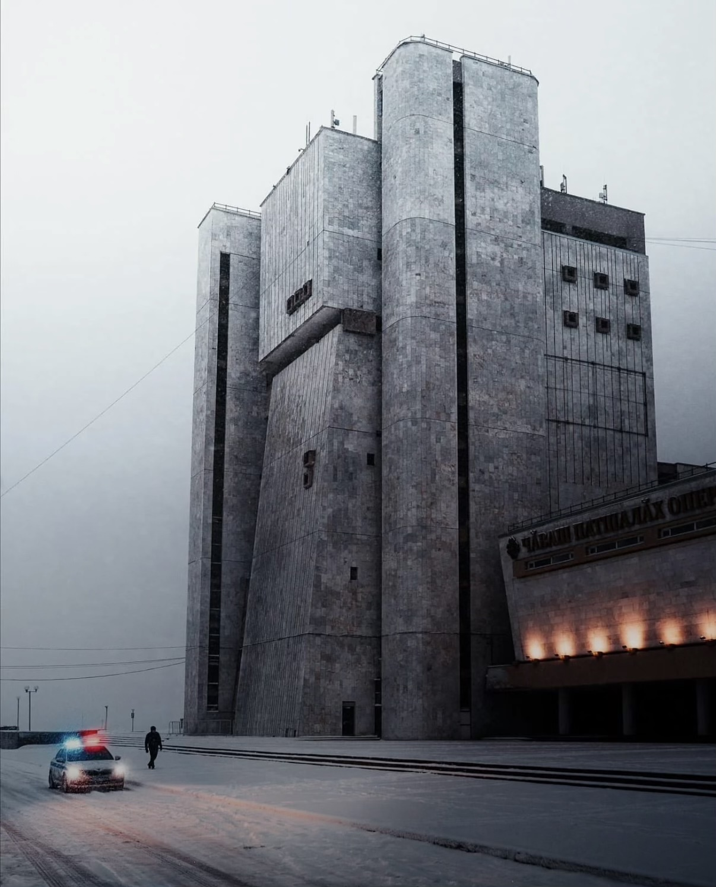

Chuvash State Opera & Ballet Theater

Soviet Apartment Building

Residential Blocks

Soviet Era Apartments

Apartments in Winter

Soviet Blocks, Aerial

Barbican Centre

Barbican — The Lakeside

Alexandra Road Estate

Simon Fraser University

Simon Fraser University

Chandigarh Capitol Complex

Rajuk Uttara Apartments

Unknown Block

Concrete Monument

Unknown Building

Abandoned

Concrete Wall

More Concrete

Unknown Building

Unknown Building

Industrial Brutalist

Corner

Shabby Concrete